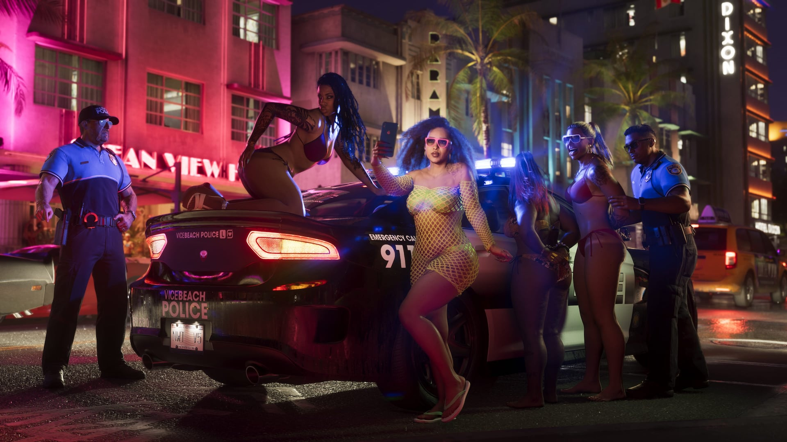

© Rockstar Games / Take-Two Interactive
Recherche à 6 étoiles et « profil criminel » confirmés
EN BREF
- Retour du maximum de six étoiles de recherche
- Nouveau « profil criminel », proche du système d'honneur de Red Dead Redemption 2
- Système de « Heat » : la police retient votre apparence et le lieu du crime
- Jauge d'essence et ravitaillement
La présentation « Extended Look » du 27 août 2026 confirme le retour du maximum classique de six étoiles de recherche, avec des poursuites impliquant véhicules de patrouille, policiers armés et hélicoptères — un cran d'intensité au-dessus de GTA V, qui plafonnait à cinq étoiles.
Le « profil criminel »
Autre nouveauté : un système de « profil criminel », qui fonctionnerait un peu comme le système d'honneur de Red Dead Redemption 2. Il influencerait subtilement le déroulement du jeu (réactions des PNJ, opportunités disponibles) selon le niveau de violence choisi par le joueur.
Le système de « Heat »
Le dossier de Game Informer (29 septembre 2026) précise le fonctionnement de la police : elle recueille des informations sur l'apparence du joueur et le lieu du crime. Changer de tenue ou de véhicule peut donc aider à semer les recherches — notre page Astuces détaille cette idée.


Images : © Rockstar Games / Take-Two Interactive
L'essence, une ressource à surveiller
Le ravitaillement en carburant a été présenté comme une mécanique à part entière : il faudra surveiller sa jauge lors des longs trajets — et y penser avant une fuite.